PR #17 at 81f34d6 → Jonah discovery experience. Public-reader screenshots only; existing cleared images, no unresolved-rights reproductions.
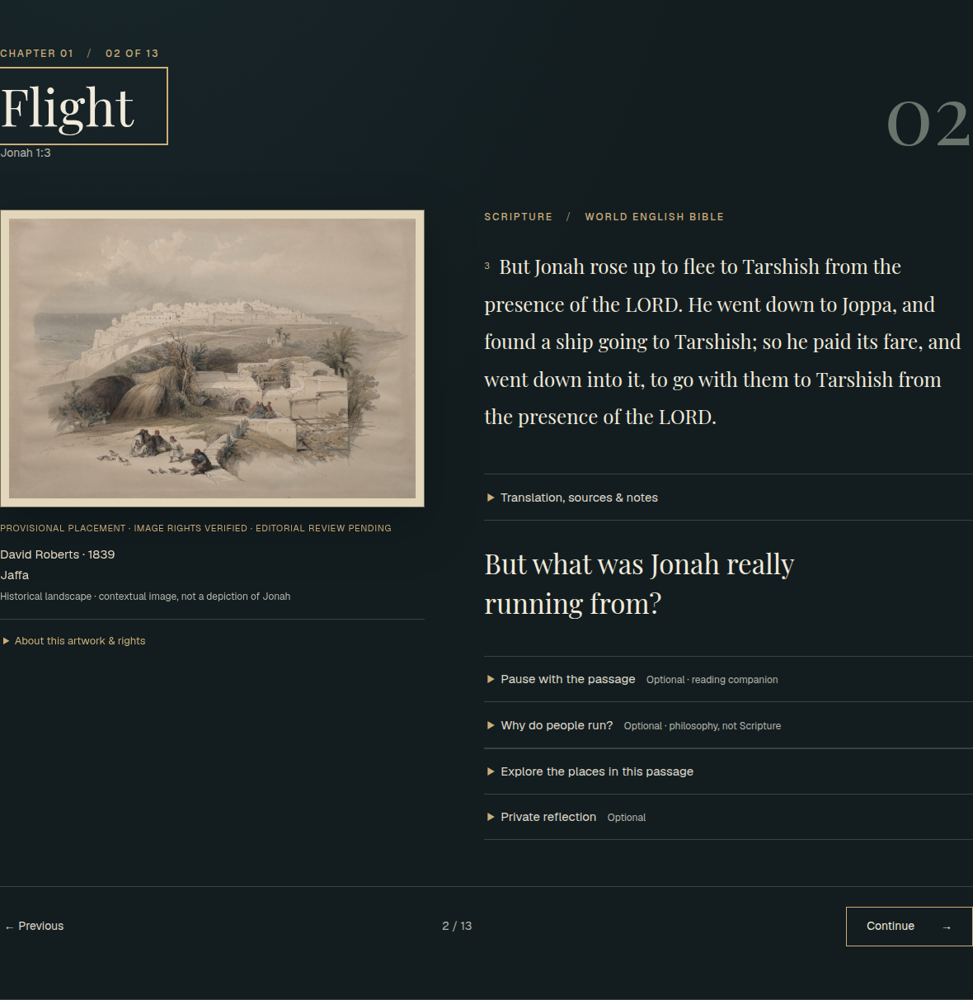
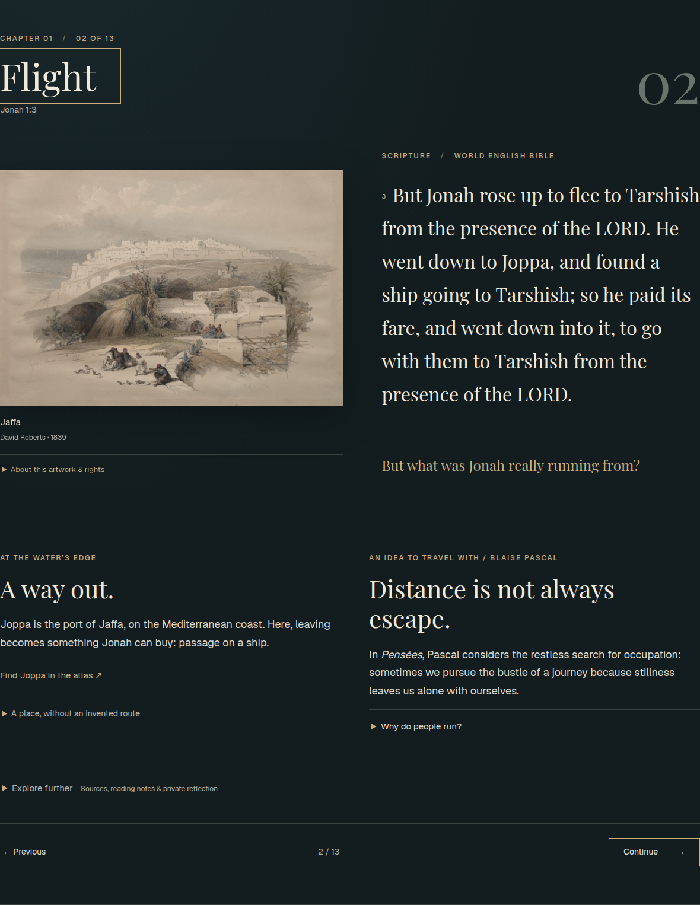
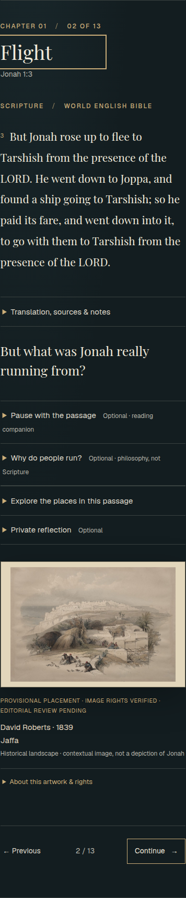
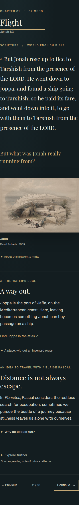
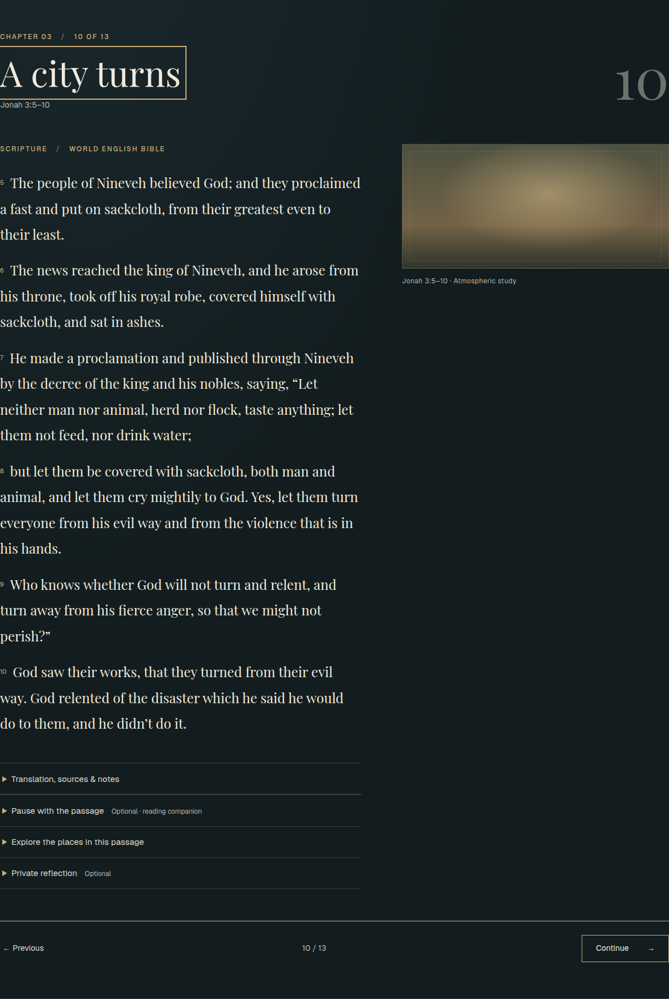
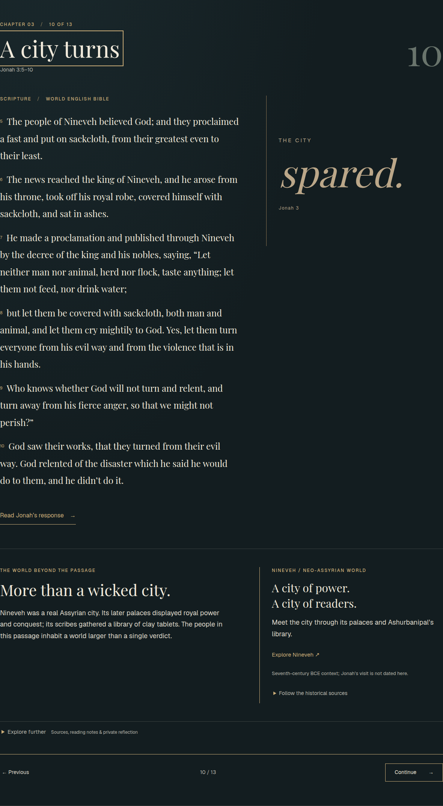
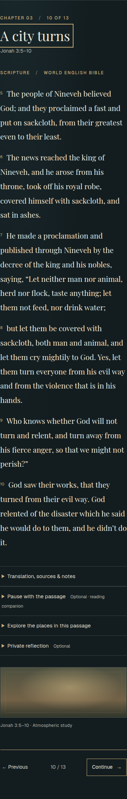
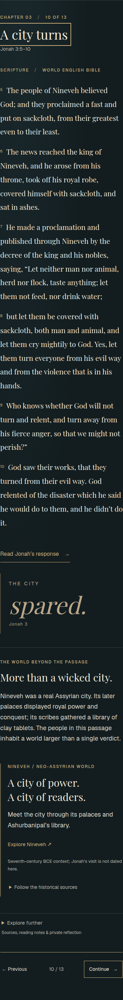
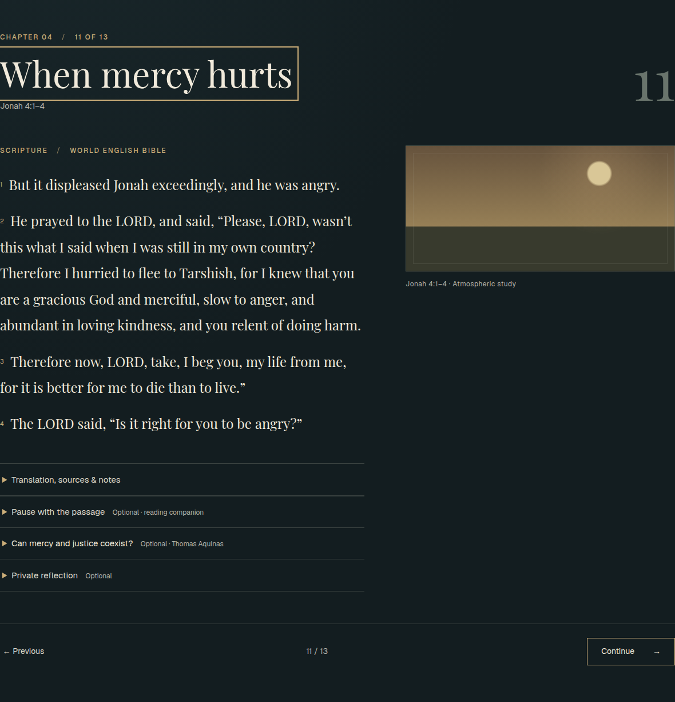
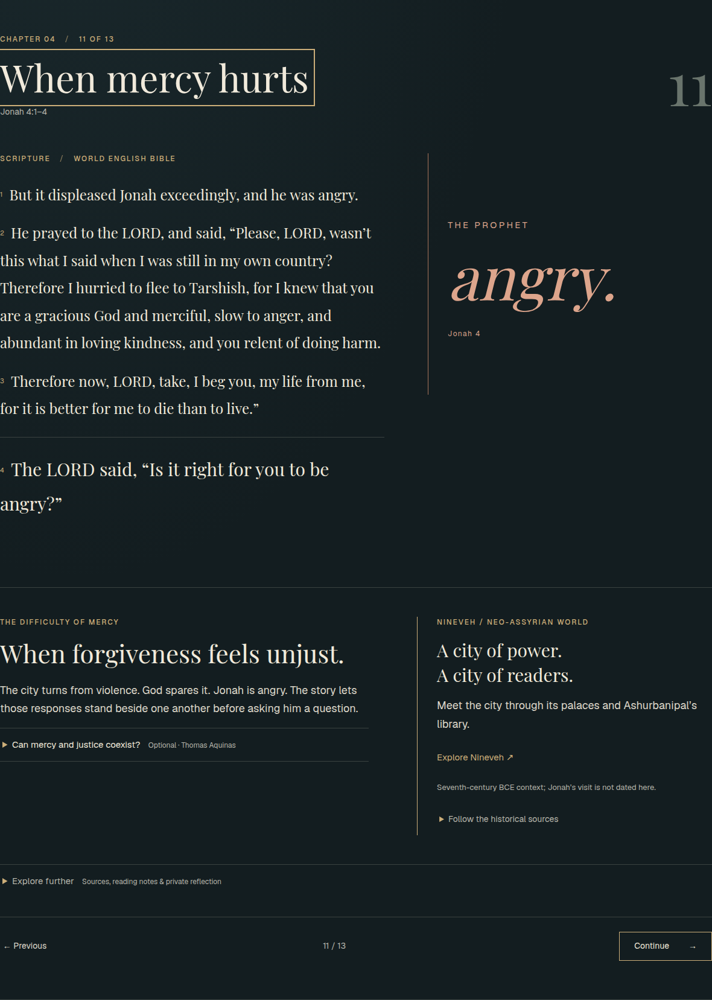
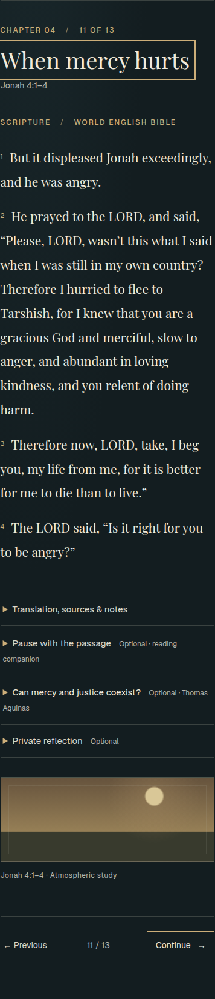
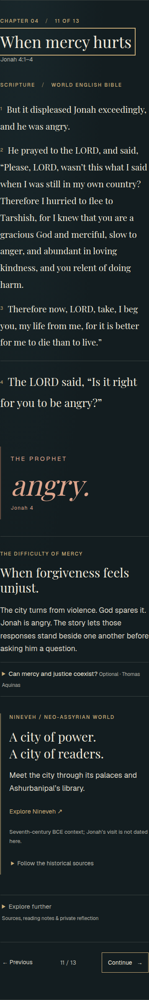
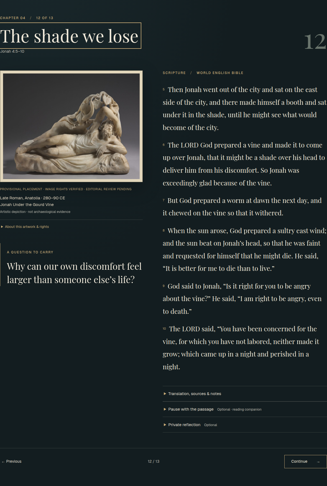
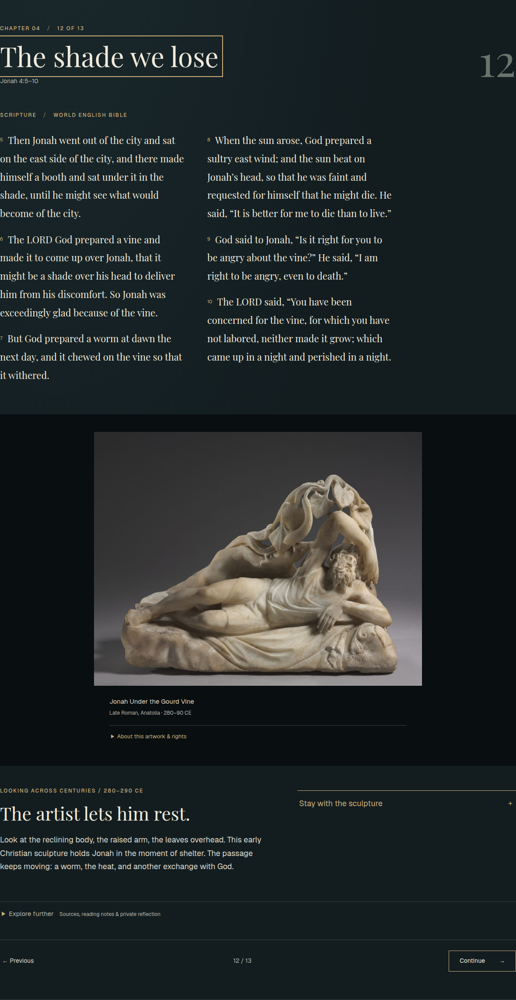
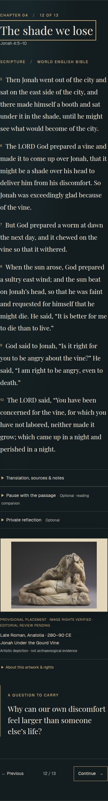
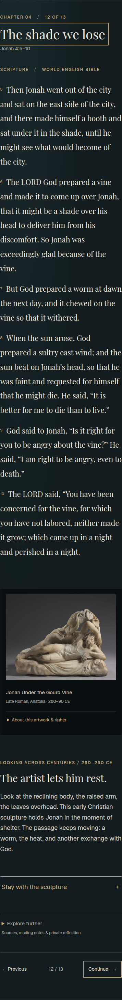
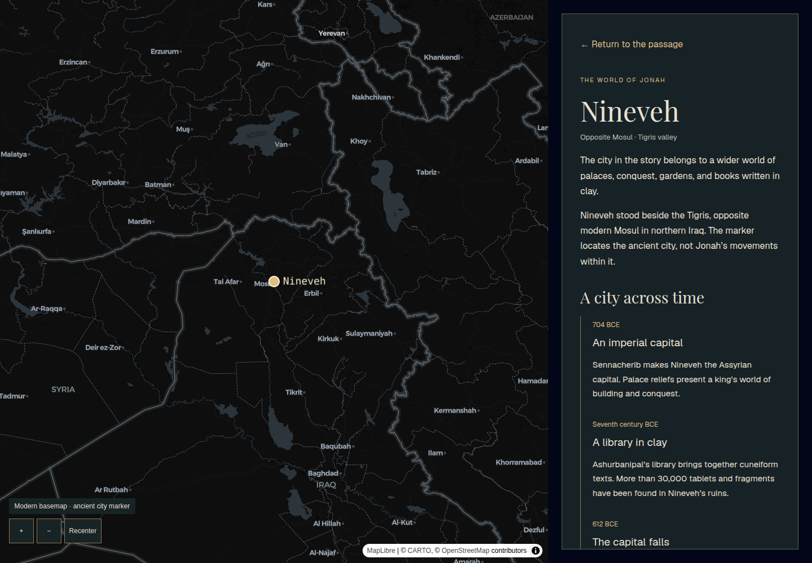
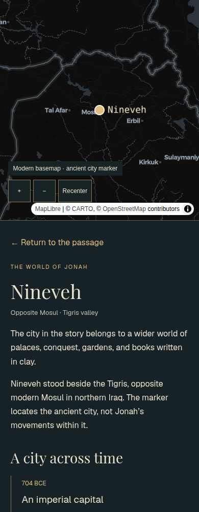
Additional 320px, keyboard, reduced-motion, source disclosure, and missing-media checks are covered by the browser suite. Editorial preview; no visitor study has been conducted.